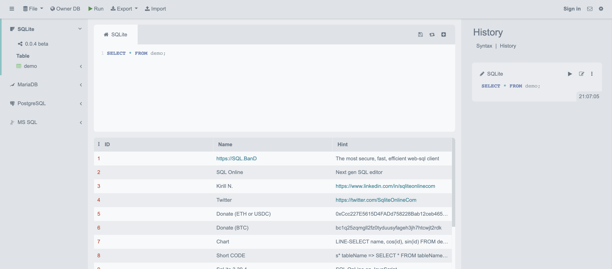

12 款日常生产力工具推荐
作者: 康凯森
日期: 2022-11-20
分类: 推荐
今天推荐下 12 款我日常使用的生产力工具，大家有其他高效的工具，也欢迎推荐。
Markdown 写作和 笔记软件 ———— MWeb
我已经使用 4 年多了，平时所有的知识笔记和博客写作都是使用 MWeb 完成的，感觉不错。功能亮点：强大的 Markdown 支持，文档库，高级搜索，多格式导出，一键文档发布等。
电子书阅读 ———— 得到
之前在得到上学习了吴军，刘润的很多课程，现在主要是用得到看电子书，主要是得到电子书会员看大多数电子书都是免费的。
画图工具 ———— Processon
我用了很多年了，感觉画图比较方便，一开始吸引我的主要是大量模板，可以基于模板快速做图，然后就是做图本身比较简单。
VPN 工具 ———— dlercloud
客户端可以使用 Clash for Windows，使用很多年了，比较稳定。
论文搜索软件 ———— Sci-Hub
可以免费获取一些付费的学术论文，该网站的发起者崇尚学术自由，目标是免费并且不受限制地提供所有科学知识。
代码命名软件 ———— CODELF
https://unbug.github.io/codelf/
我使用的频率很低，主要是 Review 其他人代码看到奇怪的命名时，可以确认下某个命名用的多不多。
文件格式转换工具 ———— cloudconvert
可以支持多种文件格式的相互转换，之前用过几次。
Markdown ———— 文档英文加空格
https://cyc2018.github.io/Text-Typesetting/
一键给 Markdown 文档中的英文增加空格，我发布博客都会使用这个工具。
代码截图工具
https://www.dute.org/code-snapshot
在线代码截图工具，根据输入的源代码，可以生成漂亮的代码图片，我用的频率比较低，因为现在博客中展示源码比较少了。
手写体画图 ———— excalidraw
可以画出手写体感觉的图片，不过我用的比较少。
代码画图工具 ———— WebGraphviz
可以利用代码画一些流程图，网络图 和 SVG 图，我使用的比较少
在线数据库客户端 ———— sqliteonline
适合数据库领域从业者，可以快速验证一些SQL 语法和细节，我使用的频率中等。

《OLAP 性能优化指南》欢迎 Star&共建
欢迎关注微信公众号